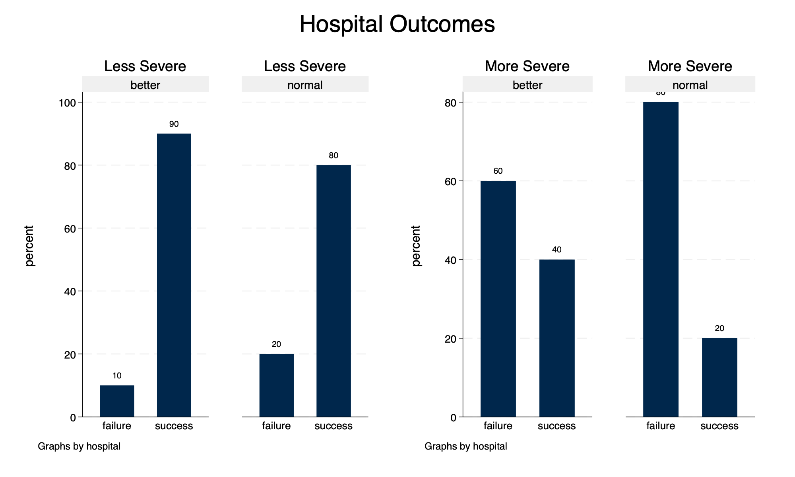

{width=50%}
{width=50%}Simpson's paradox occurs when a bivariate association is reversed in a multivariate model. This example uses simulated data from hospitals (Wang et al., 2018).
. clear all
. use "https://github.com/agrogan1/newstuff/blob/master/categorical/simpsons-paradox-hospital-data/hospitaldata.dta?raw=true"
. list
┌──────────────────────────────────────────┐
│ hospital severity outcome count │
├──────────────────────────────────────────┤
1. │ better less severe success 18 │
2. │ better less severe failure 2 │
3. │ better more severe success 32 │
4. │ better more severe failure 48 │
5. │ normal less severe success 64 │
├──────────────────────────────────────────┤
6. │ normal less severe failure 16 │
7. │ normal more severe success 4 │
8. │ normal more severe failure 16 │
└──────────────────────────────────────────┘
It appears as though patients do better at the normal hospital, as opposed to the better hospital.
. tabulate hospital outcome [fweight = count], row
┌────────────────┐
│ Key │
├────────────────┤
│ frequency │
│ row percentage │
└────────────────┘
│ outcome
hospital │ failure success │ Total
───────────┼──────────────────────┼──────────
better │ 50 50 │ 100
│ 50.00 50.00 │ 100.00
───────────┼──────────────────────┼──────────
normal │ 32 68 │ 100
│ 32.00 68.00 │ 100.00
───────────┼──────────────────────┼──────────
Total │ 82 118 │ 200
│ 41.00 59.00 │ 100.00
. graph bar (count) [fweight = count], over(outcome) over(hospital) blabel(bar) title("Hospital Outcomes") scheme(michigan)
. graph export bivariategraph.png, width(1000) replace file bivariategraph.png saved as PNG format
{width=50%}
When we factor in the severity of the illness, we arrive at the reverse conclusion. Patients do better at the better hospital.
. generate severity_hospital = severity + " " + hospital // concatenate severity + hospital type
. tabulate severity_hospital outcome [fweight=count], row
┌────────────────┐
│ Key │
├────────────────┤
│ frequency │
│ row percentage │
└────────────────┘
│ outcome
severity_hospital │ failure success │ Total
───────────────────┼──────────────────────┼──────────
less severe better │ 2 18 │ 20
│ 10.00 90.00 │ 100.00
───────────────────┼──────────────────────┼──────────
less severe normal │ 16 64 │ 80
│ 20.00 80.00 │ 100.00
───────────────────┼──────────────────────┼──────────
more severe better │ 48 32 │ 80
│ 60.00 40.00 │ 100.00
───────────────────┼──────────────────────┼──────────
more severe normal │ 16 4 │ 20
│ 80.00 20.00 │ 100.00
───────────────────┼──────────────────────┼──────────
Total │ 82 118 │ 200
│ 41.00 59.00 │ 100.00
. graph bar [fweight = count] if severity == "less severe", /// > title(Less Severe) /// > over(outcome) /// > blabel(bar) /// > by(hospital) //// > scheme(michigan) /// > name(lesssevere, replace)
. graph bar [fweight = count] if severity == "more severe", /// > title(More Severe) /// > over(outcome) /// > blabel(bar) /// > by(hospital) /// > scheme(michigan) /// > name(moresevere, replace)
. graph combine lesssevere moresevere, title(Hospital Outcomes) scheme(michigan)
. graph export multivariategraph.png, width(1000) replace file multivariategraph.png saved as PNG format
{width=50%}
Wang, B., Wu, P., Kwan, B., Tu, X. M., & Feng, C. (2018). Simpson’s Paradox: Examples. Shanghai Archives of Psychiatry, 30(2), 139–143. https://doi.org/10.11919/j.issn.1002-0829.218026